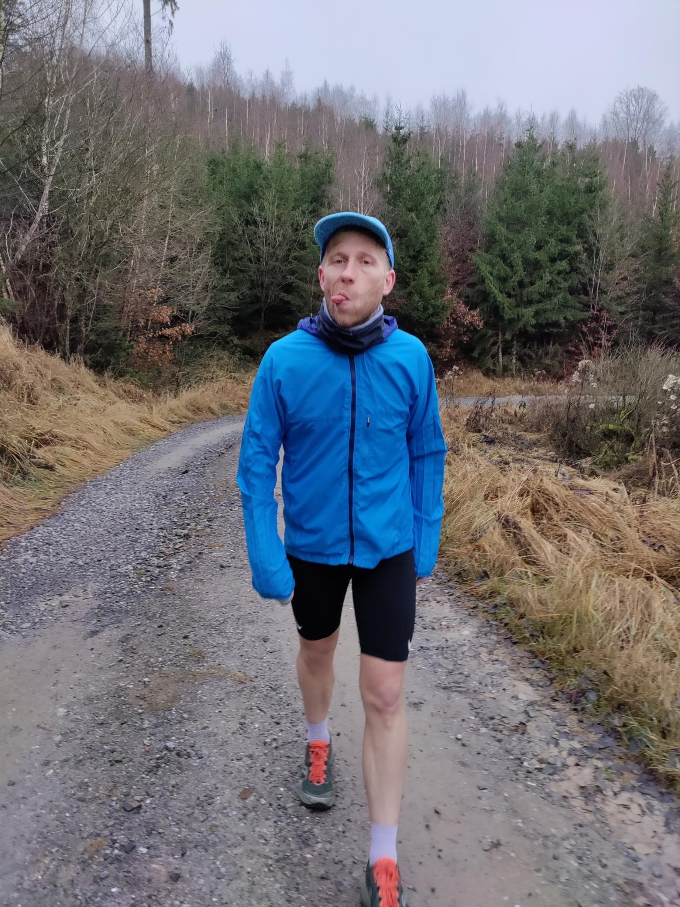

It’s me, hi!
My name is Thomas, I’m a runner, mathematician, and currently working as a data scientist at Wahoo Fitness LLC. I studied Computational Engineering Science at RWTH Aachen University and then went ont to get a Ph.D. in applied mathematics from the Karlsruhe Institute of Technology.

When I’m not using pandas (or polars!) to turn wide dataframes into long ones, I like to run through forests and around tracks.
Experience
Wahoo Fitness, Atlanta/remote, Algorithm Developer
Since March 2021
- Creation of APIs that allow the automatic monitoring of hardware and software quality metrics.
- Time series analysis and sensor fusion for various sources of data using Python.
- Statistical analysis of sports related data and creation of interactive dashboards for visualization.
- Code generation for low-level hardware using Matlab.
- Code documentation and result summaries in Confluence.
- Sprint planning using Jira in an agile environment.
Steinbuch Centre for Computing, Karlsruhe, Scientific Staff
September 2017 - March 2021
- Research in the field of kinetic theory, numerical mathematics, and machine learning. This encompasses the development of new algorithms to solve transport problems (e.g., the transport equation for radiation therapy), their implementation, and their analysis.
- Using concepts from machine learning and optimization theory, to automatically generate near-optimal sets of problem- dependent numerical parameters for the solution of advection problems.
- I optimized the performance of research software on the HPC cluster of the Karlsruhe Institute of Technology via parameter studies and OpenMP.
- For modules in the mathematics M.Sc. program (including Kinetic Theory and Uncertainty Quantification) and modules in the Computational Engineering Science B.Sc. program, I was a teaching assistant and substituted lectures.
Center for Computational Engineering Science, Aachen, Scientific Staff
March 2015 - September 2017
- Research in the field of kinetic theory, numerical mathematics, and machine learning. This encompasses the development of new algorithms to solve transport problems (e.g., the transport equation for radiation therapy), their implementation, and their analysis.
- Help with lectures in the Computational Engineering Module.
- Presentations at international conferences.
Education
Karlsruhe Institute of Technology, Ph.D. Applied Mathematics
September 2017 to March 2021
- Dissertation: “Theory, models, and numerical methods for classical and non-classical transport”
- Research in the field of kinetic theory, numerical mathematics, and machine learning. This encompasses the development of new algorithms to solve transport problems (e.g., the transport equation for radiation therapy), their implementation, and their analysis.
- Using concepts from machine learning and optimization theory, to automatically generate near- optimal sets of problem-dependent numerical parameters for the solution of advection problems.
- I optimized the performance of research software on the HPC cluster of the Karlsruhe Institute of Technology via parameter studies and OpenMP.
- For modules in the mathematics M.Sc. program (including Kinetic Theory and Uncertainty Quantification) and modules in the Computational Engineering Science B.Sc. program, I was a teaching assistant and substituted lectures.
RWTH Aachen University, M.Sc. Computational Engineering Science
September 2013 to September 2015
- Thesis: “Theory and application of numerical methods for fractional diffusion equations”
- Tutoring in the field of numerical mathematics and programming.
- Research student at the Mathematical Center for Computational Engineering Science.
- Courses on (applied) mathematics, optimization methods, and algorithmic differentiation.
RWTH Aachen University, B.Sc. Computational Engineering Science
October 2009 to September 2013
- Thesis: “Improvement of the aerodynamic shape optimization by adjoint methods in an MDO process”
- Internship and Bachelor’s thesis with EADS Cassidian, Manching, Germany.
- Courses on (applied) mathematics, fluid mechanics, and high-performance computing.
Publications
Journal articles
- Mathematische Grundlagen der künstlichen Intelligenz im Schulunterricht, Sarah Schönbrodt, TC, and Martin Frank. Mathematische Semesterberichte, pages 1–29, 2021.
- Ray Effect Mitigation for the Discrete Ordinates Method Using Artificial Scattering, Martin Frank, Jonas Kusch, TC, and Cory D. Hauck. Nuclear Science and Engineering, 194(11):971–988, 2020.
- Ray effect mitigation for the discrete ordinates method through quadrature rotation, TC, Martin Frank, Kerstin Küpper, and Jonas Kusch. Journal of Computational Physics, 382:105 – 123, 2019.
- A spectral galerkin method for the fractional order diffusion and wave equation, TC and Martin Frank. International Journal of Advances in Engineering Sciences and Applied Mathematics, 10(1): 90–104, 2018.
- A new high-order fluid solver for tokamak edge plasma transport simulations based on a magnetic-field independent discretization, G. Giorgiani, TC, H. Bufferand, G. Ciraolo, P. Ghendrih, H. Guillard, H. Heumann, B. Nkonga, F. Schwander, E. Serre, and P. Tamain. Contributions to Plasma Physics, 58(6-8):688–695, 2018.
Conference proceedings
- Highly uniform quadrature sets for the discrete ordinates method, TC, Martin Frank, and Jonas Kusch. In Proc. Int. Conf. Mathematics and Computational Methods Applied to Nuclear Science and Engineering, pages 25–29, 2019.
- Nonclassical particle transport in heterogeneous materials, TC, Martin Frank, and Edward W Larsen. In International Conference on Mathematics & Computational Methods Applied to Nuclear Science & Engineering, 2017.
- The equivalence of forward and backward nonclassical particle transport theories, Edward W Larsen, Martin Frank, and TC. In International Conference on Mathematics & Computational Methods Applied to Nuclear Science & Engineering, 2017.
Book chapters
- Vorschlag für eine Abiturprüfungsaufgabe mit authentischem und relevantem Realitätsbezug, Maike Sube, TC, Martin Frank, and Christina Roeckerath. Springer Berlin Heidelberg, Berlin, Heidelberg, 2020.